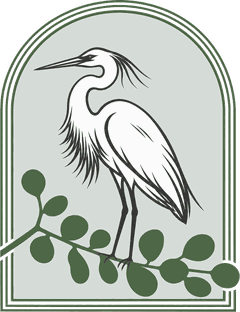
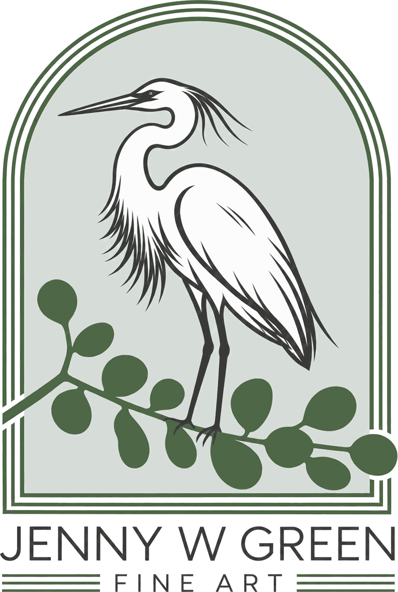
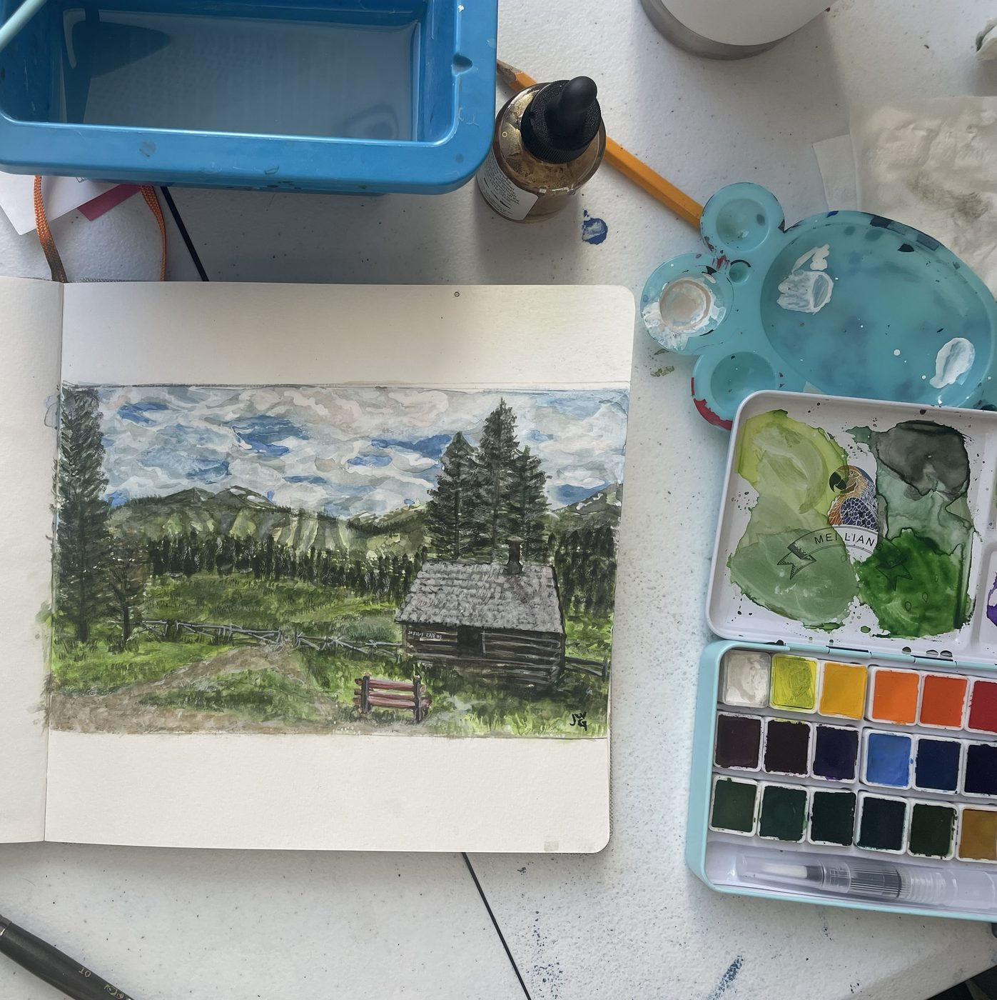

The Evening Moos
2024 · Acrylic on canvas
16 × 20 in.


Selected work · 2020–2026
Mixed media art inspired by nature, travel and whimsy, exploring beauty through texture and color.
2024 · Acrylic on canvas
16 × 20 in.
2024 · Acrylic on canvas
30 × 40 in.
2020 · Acrylic on canvas
16 × 20 in.
2021 · Acrylic on canvas
16 × 20 in.
2023 · Watercolor on paper
8 × 10 in.
2025 · Watercolor on paper
4 × 6 in.
2026 · Acrylic on canvas
8 × 8 in.
2026 · Acrylic on canvas
8 × 8 in.
2026 · Watercolor & acrylic ink on paper
5 × 7 in.
2026 · Watercolor & acrylic ink on paper
5 × 7 in.
2026 · Watercolor on paper
4 × 6 in.
2026 · Acrylic on canvas
30 × 40 in.
2026 · Watercolor & acrylic ink on paper
11 × 14 in.
2023 · Watercolor & acrylic
11 × 14 in.
2024 · Watercolor & acrylic ink on paper
5 × 7 in.
2025 · Acrylic on paper
16 × 20 in.
2026 · Acrylic ink on light blue mat board
11 × 14 in.
2026 · Acrylic ink on navy mat board
11 × 14 in.

Jenny is a painter working in acrylic, watercolor, ink and mixed media. Her love of art began early: her grandmother, an artist herself, enrolled her in art classes as a young child. That spark led to fine art and ceramics classes in high school, and later to a semester studying art in Florence, Italy, following in the footsteps of her grandmother, who had studied art there too.
In her twenties, Jenny served as executive director of The Wedgwood Circle Institute, an angel investment group that educates investors on opportunities to help support projects that are true, good and beautiful. Her connections with many creators led her back to Dallas, where in 2010 she founded Art House Dallas, a nonprofit that supports artists and the first branch of Art House America, based in Nashville.
Today Jenny lives in Dallas, Texas, with her husband, their three children and their doodle mix, Shep, who keeps her company in her home studio. She paints to hold onto beauty she has seen and to express what words cannot.
Contact
jwgreen.design@gmail.com